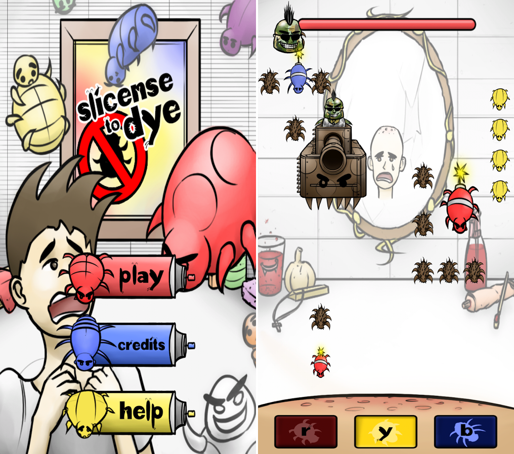

Free to Play on Android!
SLicense to Dye is a Mobile Arcade Game
A combination of frantic swiping and thoughtful maneuvering, SLicense to Dye is a student produced mobile game that challenges the link between thought and action. Facing off against the lice menace, Lou must overcome his fear of lice and secure his head from the invaders. Overcome not just the lice, but their cunning and seemingly impossible tricks - color bombs, tough as nails barrels, scary blankets, dimension bending burrowing, and the power of ninjas - if not for Lou, for humanity's sake... or something. SLicense to Dye is a mobile game that challenges the link between thought and action.
I worked on SLicense to Dye as the main Sound Designer with our team, SmokeTree Studios.
Topics
Personal Growth
- Teamwork
- Sound Design

About
I originally joined UCI's Video Game Development Club (VGDC) as a sound designer. At the time, SLicense to Dye's team, SmokeTree Studios, had already been formed and working on the game for about a year before I joined in. I messaged the team's leader, Christian Nava. They needed a sound designer, and since I felt that this project had a pretty decent potential, I hopped on aboard and joined the team.
Team Members
- Christian Nava (Team Lead)
- George Wang (Program Lead)
- Grant Walker (Program)
- Tyler Nutsathiya (Program)
- Khai Nguyen (Design Lead)
- John English (Design)
- Max Chung (Artist)
- Wesley Wu (Sound)